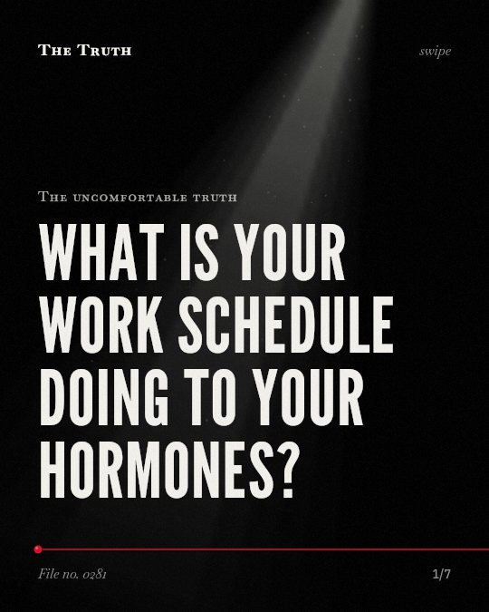

The uncomfortable truth
What is your work schedule doing to your hormones?

Night-shift work disrupts your internal cortisol rhythm.
Your body's natural hormone cycles are profoundly altered by non-traditional work schedules. This misalignment is linked to increased risks of obesity, diabetes, and cardiovascular disease.
Established. Several studies combined, or official data. The evidence is mixed.
What the research found
Chronic misalignment of the organism’s endogenous rhythms and environmental cues is linked to an increased risk of obesity, metabolic and cardiovascular disease, diabetes and cancer.
“Metabolic dysfunction due to chronic misalignment of the organism’s endogenous rhythms and environmental cues is detrimental to health, increasing the risk of obesity, metabolic and cardiovascular disease, diabetes and cancer.”
Review, 2019. Bae et al., Frontiers in Nutrition.
Night-shift work is linked to a higher risk of gastrointestinal disorders, notably IBS and diarrhea.
“Rotating shift work among nurses, particularly schedules including night shifts, is associated with a higher risk of gastrointestinal disorders, notably IBS and diarrhea.”
Meta-analysis, 2026. Pérez-Manchón et al., Frontiers in public health.
The circadian rhythm of cortisol is profoundly disrupted by night-shift work.
“The circadian rhythm of cortisol, a key hormone essential for maintaining metabolic balance and stress homeostasis, is profoundly disrupted by night-shift work.”
Review, 2025. Andreadi et al., International Journal of Molecular Sciences.
Disruption of circadian rhythms by stressors, lifestyle and behavioral choices such as work schedules, eating patterns and jetlag, including social, seriously impact and impair metabolism.
“Disruption of circadian rhythms by stressors, lifestyle and behavioral choices such as work schedules, eating patterns and jetlag, including social, seriously impact and impair metabolism.”
Review, 2019. Bae et al., Frontiers in Nutrition.
Workers' fatigue is the end result of integration of multiple factors such as time awake, time of day, and workload.
“Fatigue is the end result of integration of multiple factors such as time awake, time of day, and workload.”
Study, 2015. Yazdi & Sadeghniiat‐Haghighi, Industrial Psychiatry Journal.
Work schedules impact your metabolism.
Stressors like work schedules and eating patterns impact your metabolism. This disruption of your internal rhythms is linked to various metabolic and cardiovascular diseases.
Your schedule dictates your physical health.
That may be why your work hours are not just a matter of convenience. They are a physiological stressor that affects your metabolic and gastrointestinal health.
This part is our reading of the evidence, not a finding.
The hum of the office lights.
You sit at your desk at 10 p.m. The fluorescent lights stay on while your body tries to signal rest. Your coffee is cold.
The honest summary
The evidence confirms that modern work schedules cause significant physiological and metabolic disruption but does not mention the specific use of stimulants to manage sleep debt.
None of the provided sources contain data regarding the use of stimulants or specific workplace trends of trading sleep for cognitive performance.
What is your schedule costing your body?
Sources
- Aikaterini Andreadi, Stella Andreadi, Federica Todaro et al. (2025). Modified Cortisol Circadian Rhythm: The Hidden Toll of Night-Shift Work. International Journal of Molecular Sciences. Review, cited 105 times.
- Seul-A Bae, Mingzhu Fang, Vinod K. Rustgi et al. (2019). At the Interface of Lifestyle, Behavior, and Circadian Rhythms: Metabolic Implications. Frontiers in Nutrition. Review, cited 104 times.
- Zohreh Yazdi, Khosro Sadeghniiat‐Haghighi (2015). Fatigue management in the workplace. Industrial Psychiatry Journal. Study, cited 252 times.
- Pérez-Manchón D, Lozano-Hernández CM, Mata-González G, Arias-Arias AJ, Mayoral-Gonzalo N, Gómez-de Quero Córdoba M, Ruiz-Zaldibar C (2026). Impact of nursing shift patterns on work-related gastrointestinal disorders: a systematic review and meta-analysis. Frontiers in public health. Meta-analysis.
Also read for this file, not quoted
- Walker et al. (2020). Circadian rhythm disruption and mental health.
- Sun & Chen (2021). Treatment of Circadian Rhythm Sleep–Wake Disorders.
This file was researched and drafted by software, then checked by rules a model cannot talk its way around: each quote above was matched word for word against the paper, and every number had to appear in it. How files are made.